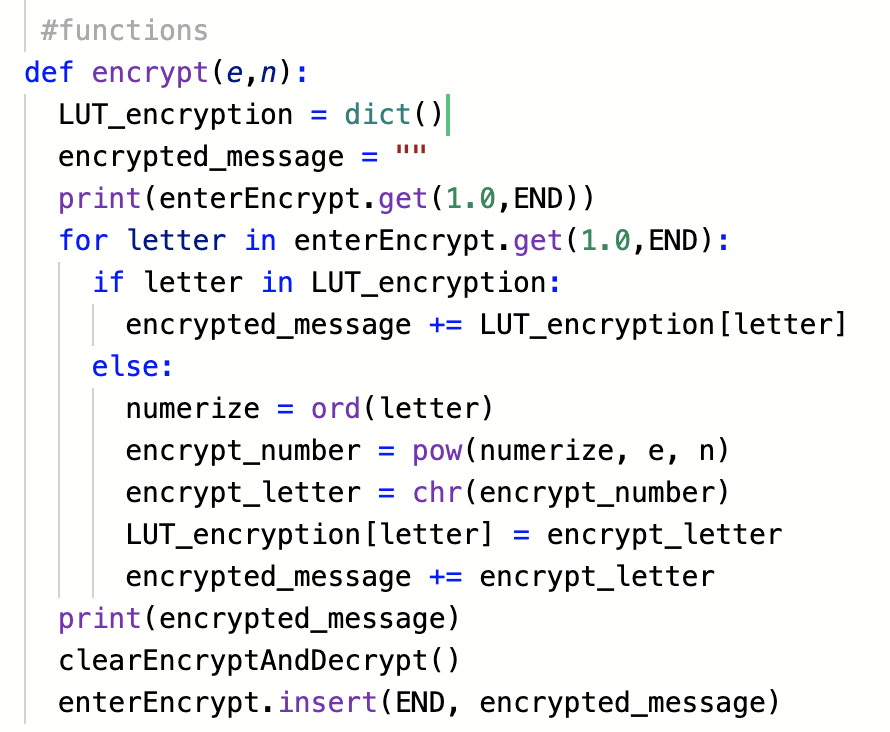
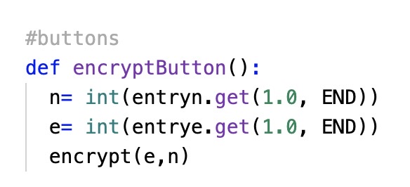

Answers 3a) The overall purpose of my program is to encrypt a message using a public key, save it to a file that is able to be reopened after saving, and to secondly decrypt said reopened file after putting in the correct private key information. The functionality demonstrated in the video is the user (me) inputting both values for n and e and saving an encrypted message to a file using the file menu drop down and encrypt button. I then decrypt the message by reopening the string saved to the file, inputting the correct private key values of n and d, and pressing the decrypt button. The input of the program was my soon to be encrypted message, n, and e values. And the output was an encrypted message. The second input of the program was the pasted encrypted message and n and d values which had the output of the decryption of the message.
 
The encrypt function uses the value of n and e to encrypt the string entered into the encrypt entry box which is received into a file when the encryptButton is pressed. The for loop individually runs through each character in the string and chooses a character for it to replace based on the public key and ascii table. The encrypted message then replaces the original message that the user wrote in.
In the second picture, the encryptButton is “getting” or “calling” the variables of n and e so that it can run it through the for loop in the encrypt function at the push of a button. The procedure allows for the program to encrypt a message whenever the user wants.
The procedure will decrypt the string message inputted by the user into a dictionary using the ‘dict()’ function and ‘LUT_encryption’ variable. The for loop allows for this to happen fast. The variable ‘message’ that is a string of what the user inputted gets put in the big box while ‘encrypted_message’ will use the new encrypted characters to replace what the user originally put into the big box. Afterwards, a ‘for’ loop decrypts is the encrypted message letter-by-letter. The if statement looks for repeated variables and variables that are new so that it makes sure they are in the dictionary we created. The else statement numerizes each letter in the message with the ‘ord()’ function and then the numerized letters are then encrypted with the ‘pow()’ function. The characters are converted in the ascii table using the chr() function and concatenates a message till there are none of the user's original characters left. Then, the encrypted message replaces the original user's message.